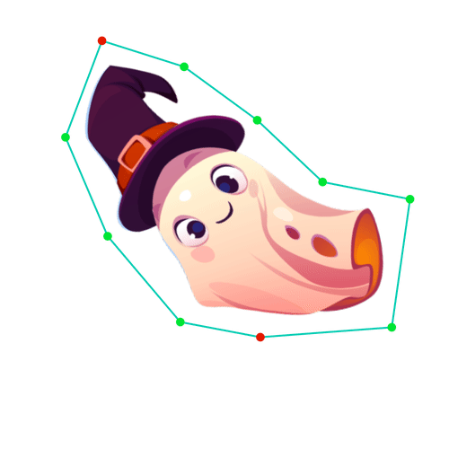

|
The University of Tokyo |
The University of Tokyo |
|  |
Our method allows the creation of dynamic animation with linear blend skinning and position based dynamics interactively.
AbstractSkinning transformations allow digital characters to be animated with minimal user inputs. Physics simulations can improve the detailed dynamic movement of the animated character; however, such details are typically added in the post-processing stage after the overall animation is specified. We propose a novel interactive framework that unifies skinning transformations and kinematic simulations using position-based dynamics (PBD). Our framework allows an arbitrarily skinned character to be partially manipulated by the user, and a kinematic physics solver automatically complements the behavior of the entire character. We achieve this by introducing new steps in the PBD algorithm, (i) lightweight optimization to identify the skinning transformations, which is similar to inverse kinematics, and (ii) a position-based constraint to restrict the PBD solver in the complementary subspace of the skinning deformation. Our method combines the best of the two methods: the controllability and shape preservation of the skinning transformation and the efficiency, simplicity, and unconditional stability of the PBD solver. Our interface allows novices to create vibrant animations without the need for tedious editing. PublicationProceedings of the ACM on Computer Graphics and Interactive Techniques (SCA 2023) Links and Downloads
AcknowledgementsWe thank the anonymous reviewers for their insightful comments and suggestions. We also thank Yuki Koyama for the discussion in the early stage of this research project. Citation
@article{Yuhan2023SkinPBD,
author = {Wu, Yuhan and Umetani, Nobuyuki},
title = {Two-Way Coupling of Skinning Transformations and Position Based Dynamics},
year = {2023},
url = {https://doi.org/10.1145/3606930},
doi = {10.1145/3606930},
journal = {Proc. ACM Comput. Graph. Interact. Tech.},
}
|
{kind=link}
{kind=link}
{kind=link}